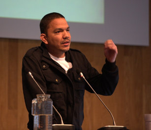

Ton Roosendaal, presidente da Blender Foundation.
(Fotografia de William Maanders)
De acordo com a versão relatada na página oficial da aplicação 1 , a origem do Blender remonta a 1988, quando Ton Roosendaal, figura liderante nesta narrativa, co-fundou a “NeoGeo”, um estúdio de animação que rapidamente se tornou numa das principais empresas holandesas na área da animação 3D. Em 1995, em vez da atualização do conjunto de ferramenta próprias até aí utilizado, a empresa opta pela reescrita do código-fonte criando uma nova ferramenta de modelação e animação 3D, foi iniciado o processo de conceção do Blender.
Em Junho de 1998, Ton Roosendaal funda a empresa “Not a Number” (NaN), spin-off da “NeoGeo”, com o objetivo de aprofundar o desenvolvimento e publicitar a aplicação criada. O modelo comercial da empresa envolvia a distribuição gratuita da ferramenta de modelação e animação 3D, permitindo alcançar um público mais abrangente, e a comercialização de serviços e outros produtos desenvolvidos em torno do funcionamento da aplicação.
Nos dois anos anos seguintes, a empresa e a ferramenta alcançaram uma enorme visibilidade e um sucesso surpreendente. No final de 2000, o Blender já tinha sido distribuído na sua versão 2.0, existiam 250.000 utilizadores registados e empresa integrava funcionários na Holanda, Estados Unidos e Japão.
No ano seguinte, não obstante o sucesso inicial, a leis do mercado forçam a empresa a um redimensionamento. Ainda em 2001, a empresa edita a sua primeira aplicação destinada ao mercado comercial mas os números das vendas revelam-se bastante abaixo das expetativas. Consequentemente, os investidores decidem encerrar todas as atividades da empresa, incluindo o desenvolvimento do Blender.
Em Março de 2002, Ton Roosendaal funda a Blender Foundation com o intuito de continuar a promover o desenvolvimento e a promoção do Blender numa lógica de projeto com código aberto e sustentado pela comunidade dos seus utilizadores. Poucos meses depois, em Julho, Roosendaal consegue firmar um acordo entre a Blender Foundation e os investidores da NaN Holding BV que estabelece a venda dos direitos sobre a propriedade intelectual e código-fonte do Blender a troco de um pagamento único de 100.00 € e da manutenção do código-fonte da aplicação, e subsequentes desenvolvimentos, em regime de Software Livre ou Código Aberto.
Em apenas sete semanas, com o auxílio de voluntários, através da campanha Free Blender para angariação de donativos, a Fundação reuniu o montante necessário para cumprir com o acordo. Em Outubro de 2002, durante a 1a Conferência Blender, em Amesterdão, o código-fonte é oficialmente disponibilizado na Internet sob uma licença GNU General Public License.
Para saber mais...

Ton Roosendaal, presidente da Blender Foundation.
(Fotografia de William Maanders)
Pencil was originally an application created by Patrick Corrieri by the end of 2005 under the name “Pencil Planner”. It was a simple yet effective pencil test (a.k.a. line test) programme. It included a drawing area, a single-track timeline where keyframes could be added, previous and next onion skins. The drawing tools were a pencil and an eraser, along with a colour chooser. The animation could be played at a specified frame rate, and in addition it was possible to add a background image and a background sound. It was developed under Qt 3 and made available on Macintosh and then Windows platforms under GPL license. The Mac version could output QuickTime files. There were two releases v0.1 and v0.2. This is a screenshot of v0.2: ss Once upon a time, there was a wonderful software called Pencil, by Pascal Naidon and Patrick Corrieri. It was a tool for creating traditional animation, using both bitmap and vector graphics; which was intuitive, cool, light, opensource 1, cross-platform… and very promising ! He needed to grow a little more; he needed some light and love; but it’s original developpers did not have the time to work on it anymore. One of it’s previous developpers, once even said : Pencil as it stands today is dead. Bou-hou. It was very, very sad. Like in very, very dark stories. And yes, “dead” was written in bold. But this is internet guys. There is something to do with all that code. Matt Chang started a fork called, guess what, Pencil2d. This website intend to be a place, a community where people can talk about it and eventually help to make it happen ! Pencil2D, based on old Pencil software, has been started in may 2013 by Matt Chang. http://www.pencil2d.org/2010/06/the-vision-for-pencil-by-pascal-naidon/
Ton Roosendaal, presidente da Blender Foundation.
(Fotografia de William Maanders)
ss Synfig Studio (also known as Synfig) is a free and open source 2D vector graphics and timeline-based computer animation program created by Robert Quattlebaum[1] with additional contributions by Adrian Bentley. Synfig began as the custom animation platform for Voria Studios (now[when?] defunct), and in 2005 was released as free/open source software, under the GNU General Public License.[2] It was originally called SINFG, a recursive acronym for "SINFG Is Not A Fractal Generator", referring to the software's capability of generating fractal imagery in addition to animation.[7]
Gustav González no Libre Graphics Meeting 2013.
(Fotografia de Nate Willis)
Gustav González, the main developer for Tupi KTooN started at 2002, when I proposed to a friend, Monica Ortiz, to develop a free software solution to replace Macromedia Flash for her 2D animation company, Toonka Films. Our main goal was to provide a free/open tool for small 2D animation companies looking for developing their first productions. Back then, we didn’t expect any impact further than Latin America At 2010, I decided to create a fork called Tupi after differences with my partners. The new Tupi brand was required because of copyright issues. Since KTooN was free software from day one, I could reuse the its entire source code
A fork of the KTooN project A design and authoring tool for digital artists interested in 2D Animation, offering an interface experience focused on 8-100 years old kids A software application developed in C++ using the Qt library A free software project under constant redesign and evolution, released under the GPL terms (version 2+) Work Team Cody Clees: CEO, Funding Research and Management Gustav González: CTO, Development Leader and Programmer